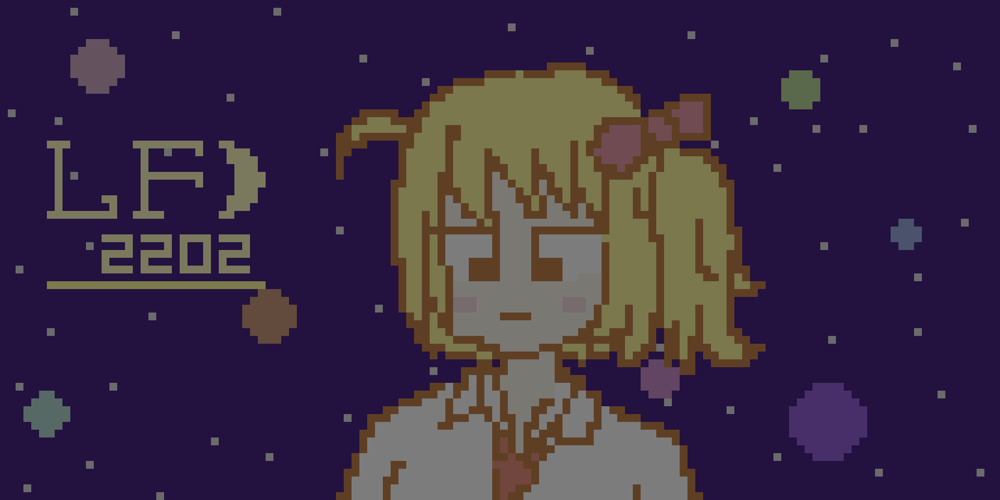

LF(Lemon Festival)とは、LECが不定期で開催しているイベントです。
リアルイベントなどには及ばない程度の小さい祭りですが、LECを代表するイベントとなっています。
四季に応じた動画の作成を行ったり、ゲームやソフトウェアの発表を行ったりしています。
YouTubeで配信を行っております。 (再生リスト)
(画像なし)
LF2201

LF2202
LF2203 - 秋 -
LF2204 - 冬 -
LF2301 - 花 -
LF2302 - 春 -
LF2303 - 夏 -